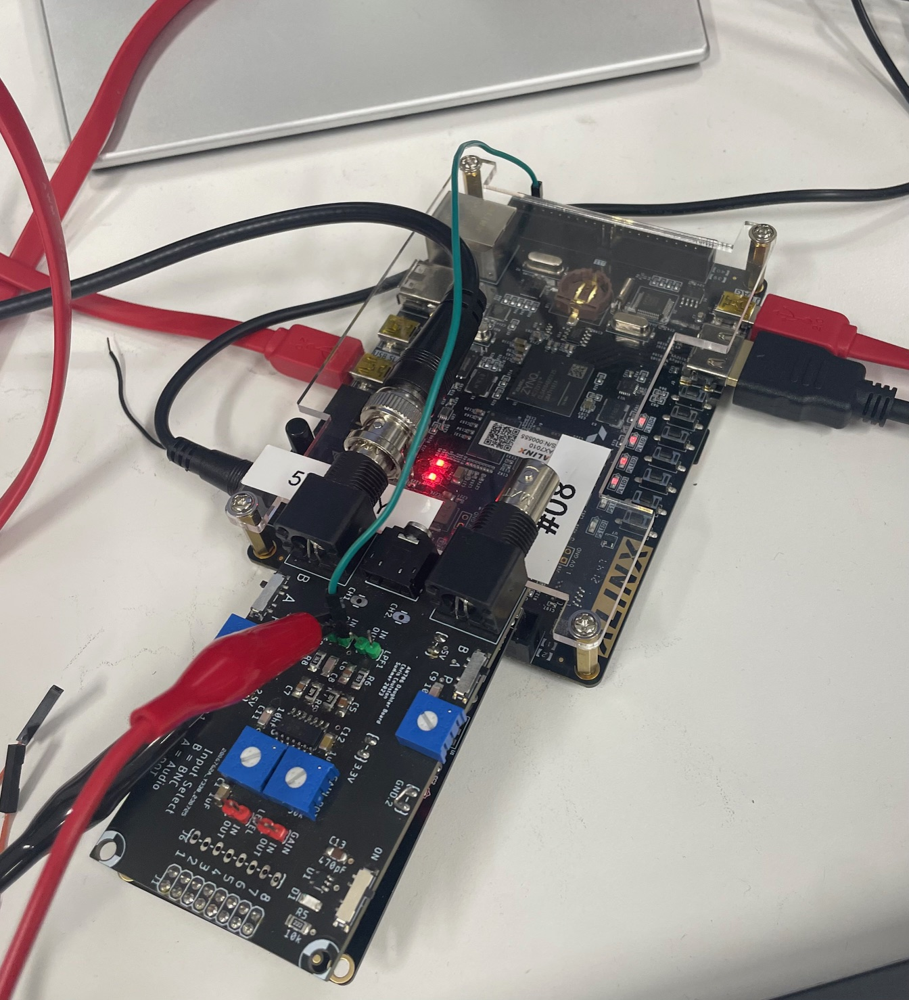
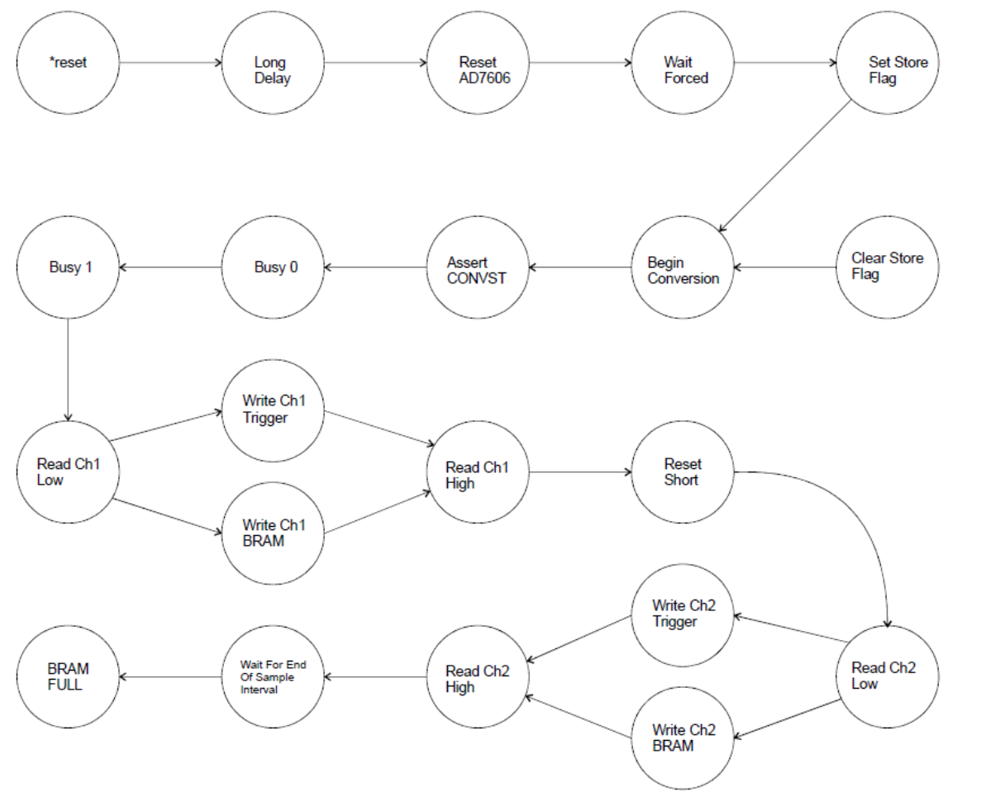

Oscilloscope Software/Hardware Co-design on Zynq-7010 SoC
Overview #
For this project, I designed a two-channel oscilloscope on a Xilinx Zynq-7010 SoC. The design captures analog signals from the AD7606 ADC and displays the waveforms in real time over HDMI. The design splits responsibility across two domains on the same chip: programmable logic (PL) which is implemented in VHDL, handles the acquisition and video pipeline which is very timing-dependent, while the ARM Cortex-A9 processing system (PS) runs embedded C firmware for user control through a command line interface.
The two domains communicate through a custom AXI4-Lite slave peripheral, giving the ARM processor memory-mapped access to control registers, status flags, and live sample data in the FPGA fabric.

System Architecture #
The top-level VHDL entity acquireToHDMI.vhdl is packaged in an IP named final_oscope and instantiates two sub-modules: a datapath (acquireToHDMI_datapath) handling the ADC interface, waveform buffering, and video rendering, and a Moore FSM (acquireToHDMI_fsm) generating the control word that sequences all operations. The AXI wrapper (final_oscope_slave_lite_v1_0_S00_AXI.vhdl) instantiates this top-level and exposes its ports as memory-mapped registers to the PS. The signals fed from the wrapper were accessed in the file helloworld.c. For function generation, the enhancedPwm IP is used which takes in a duty cycle and outputs the pwm signal.
+---------------------+ AXI4-Lite Bus +----------------------+
| ARM Cortex-A9 (PS) | <-------------------------> | PL (VHDL Fabric) |
| | | |
| Vitis C firmware | slv_reg0: CH1 data (R) | final_oscope |
| - UART CLI | slv_reg1: CH2 data (R) | +-----------------+ |
| - TTC0 ISR | slv_reg2: status (R) | | ADC FSM | |
| - Trigger control | slv_reg3: control (W) | | Sample timer | |
| - Function gen | slv_reg4: trig volt (W) | | Trigger logic | |
| | slv_reg5: trig time (W) | | HDMI renderer | |
+---------------------+ | +-----------------+ |
| |
AD7606 ADC -->| 16-bit parallel bus |
HDMI output <-| TMDS serializer |
+----------------------+
Programmable Logic — VHDL Design #
PWM Function Generation #
The module enhancedPwm.vhdl contains the PL functionality for generating a pwm signal. The module takes a 9-bit duty cycle input and outputs a pwm signal. The entity declaration can be seen below:
entity enhancedPwm is
Port ( clk : in STD_LOGIC;
resetn : in STD_LOGIC;
dutyCycle : in STD_LOGIC_VECTOR (8 downto 0);
enb : in STD_LOGIC;
pwmSignal : out STD_LOGIC;
pwmCount : out STD_LOGIC_VECTOR (7 downto 0);
rollOver : out STD_LOGIC);
end enhancedPwm;
HDMI Display #
An hdmi video controller was implemented to convert VGA to HDMI format. The controlloer was responsible for displaying the grid, two trigger markers, and the two channel waveforms. The top level module scopeToHdmi.vhdl which facilitates the interaction between the scopeFace.vhdl module that determines the color at each pixel and videoSignalGenerator.vhdl which determines the HDMI coordinates of each pixel.
entity scopeToHdmi is
PORT ( sysClk : in STD_LOGIC;
resetn : in STD_LOGIC;
btn: in STD_LOGIC_VECTOR(2 downto 0);
tmdsDataP : out STD_LOGIC_VECTOR (2 downto 0);
tmdsDataN : out STD_LOGIC_VECTOR (2 downto 0);
tmdsClkP : out STD_LOGIC;
tmdsClkN : out STD_LOGIC;
hdmiOen: out STD_LOGIC);
end scopeToHdmi;
The final output of the HDMI display is shown below:

Datapath and Control #
The PL follows a standard datapath and control design. The datapath (acquireToHDMI_datapath.vhdl) contains all registers, counters, BRAMs, comparators, and pixel converters as structural VHDL instantiations. The control module (acquireToHDMI_fsm.vhdl) is a finite state machine that observes the status word (sw) from the datapath and drives a control word (cw) back to it — the two modules communicate only through these two buses, with no direct logic between them.
CW and SW Signals #
The FSM has no knowledge of signal values — it only sees a vector of condition bits (the status word) and outputs a vector of control bits (the control word). Every datapath resource — counters, registers, BRAM write enables — is gated by a dedicated bit in cw. This makes the state outputs in the FSM completely readable as a lookup table: each state drives a fixed cw pattern with named bit positions defined in the shared package.
Key status word (sw) bits observed by the FSM:
| Bit | Signal | Source in datapath |
|---|---|---|
BUSY_SW |
AD7606 busy pin | External ADC pin |
SHORT_DELAY_DONE_SW |
Short counter == target | shortCompare |
LONG_DELAY_DONE_SW |
Long counter == target | longCompare |
FULL_SW |
BRAM write address == screen width | cmp_BRAM_full |
SAMPLE_SW |
Sample counter == rate target | sampleCompare |
TRIG_CH1_SW |
CH1 rising edge detected | Trigger comparators |
TRIG_CH2_SW |
CH2 rising edge detected | Trigger comparators |
STORE_SW |
SR latch — BRAM fill active | SR latch process |
SINGLE_SW / FORCED_SW |
Mode from PS control reg | user input (AXI slv_reg3) |
Key control word (cw) bits driven by the FSM:
| Bit(s) | Function |
|---|---|
CONVST_CW |
Assert ADC conversion start |
CS_CW, RD_CW |
ADC chip select and read strobe |
RESET_AD7606_CW |
ADC hardware reset |
DATA_STORAGE_CH1_WRITE_CW |
BRAM write enable for CH1 |
DATA_STORAGE_CH2_WRITE_CW |
BRAM write enable for CH2 |
TRIG_CH1_WRITE_CW |
Load trigger sample register CH1 |
TRIG_CH2_WRITE_CW |
Load trigger sample register CH2 |
SET_STORE_FLAG_CW / CLEAR_STORE_FLAG_CW |
Set/clear the SR latch |
DATA_STORAGE_COUNTER_CW |
Count/hold/reset BRAM write address |
SHORT_DELAY_COUNTER_CW / LONG_DELAY_COUNTER_CW |
Count/hold/reset delay timers |
SAMPLING_COUNTER_CW |
Count/hold/reset sample interval timer |
Finite State Machine Implementation #
The FSM has 22 states sequencing the full acquisition pipeline. The major flow is:

At each ADC read state, the FSM branches based on STORE_SW: if the SR latch is set (BRAM fill is active), it routes the sample to BRAM (WRITE_CH1_BRAM); otherwise it routes it only to the trigger comparator registers (WRITE_CH1_TRIG). This ensures samples are compared against the threshold continuously but only written to BRAM once a trigger has been detected.

ADC Interface (AD7606) #
The AD7606 is an 8-channel, 16-bit SAR ADC with a parallel readout interface. The FSM drives CONVST, CS, RD, and RESET in the correct sequence — asserting conversion start, waiting for the BUSY flag to deassert (states BUSY_0 → BUSY_1), then clocking out the 16-bit result. Two short-delay counters in the datapath provide the required ADC setup and hold timing. Sampling rate is controlled by a 4-to-1 mux (sampleMux) that selects between four preset counter targets based on the 2-bit sampleRate_select from the PS.
Trigger Logic #
Trigger detection uses a two-sample edge detector implemented structurally in the datapath. For each channel, two chained genericRegister instances capture consecutive ADC samples, and two genericCompare_Signed instances compare each against the signed threshold voltage:
- Sample 1 comparator: checks
sample1 > threshold(rising condition) - Sample 2 comparator: checks
sample2 < threshold(pre-crossing condition)
The trigger fires when both conditions are true simultaneously — sample 2 was below threshold and sample 1 crossed above it. This detects a rising edge crossing rather than just a level threshold, preventing false triggers on a flat signal sitting above the threshold.
Trigger mode (forced_mode = 0) — the FSM loops through BEGIN_CONVST continuously, writing samples only to the trigger registers, until TRIG_CH1_SW fires. Then SET_STORE_FLAG enables BRAM writes and the next VIDEO_WIDTH samples fill the display buffer.
Forced mode (forced_mode = 1) — the FSM parks in WAIT_FORCED and only proceeds on a SINGLE_SW pulse from the PS, immediately setting the store flag and capturing one frame.
HDMI Video Output and Waveform Rendering #
The datapath instantiates a clk_wiz_0 PLL to derive the pixel clock (videoClk) and a 5x clock (videoClk5x) for TMDS serialization from the system clock. The videoSignalGenerator produces standard HS, VS, and DE timing signals along with pixel coordinates (pixelHorz, pixelVert).
Each channel’s BRAM is dual-port: port A is clocked on the system clock and written by the FSM during acquisition; port B is clocked on the pixel clock and read during display. The read address is pixelHorz - L_EDGE, mapping each horizontal pixel directly to a stored sample. A toPixelValue converter scales the 16-bit signed ADC value to a vertical pixel coordinate, and a genericCompare checks whether the current pixelVert matches — driving the ch1 / ch2 signals into the scopeFace renderer which composites the waveform, grid, and trigger markers into RGB pixel values for the hdmi_tx_0 serializer.
AXI4-Lite Slave Wrapper #
The AXI wrapper (final_oscope_slave_lite_v1_0_S00_AXI) implements a custom AXI4-Lite slave with 10 32-bit registers and two independent read/write state machines. The register map exposes the oscilloscope IP to the ARM:
| Register | Direction | Contents |
|---|---|---|
| slv_reg0 | Read | CH1 sample data (16-bit) |
| slv_reg1 | Read | CH2 sample data (16-bit) |
| slv_reg2 | Read | Status flags |
| slv_reg3 | Write | Control register |
| slv_reg4 | Write | Trigger voltage (signed 16-bit) |
| slv_reg5 | Write | Trigger time (pixel position) |
S_AXI_RDATA <= ch1_data_int when (axi_araddr(ADDR_LSB+OPT_MEM_ADDR_BITS downto ADDR_LSB) = "000" ) else
ch2_data_int when (axi_araddr(ADDR_LSB+OPT_MEM_ADDR_BITS downto ADDR_LSB) = "0001" ) else
status_reg_int when (axi_araddr(ADDR_LSB+OPT_MEM_ADDR_BITS downto ADDR_LSB) = "0010" ) else
slv_reg3 when (axi_araddr(ADDR_LSB+OPT_MEM_ADDR_BITS downto ADDR_LSB) = "0011" ) else -- control register
slv_reg4 when (axi_araddr(ADDR_LSB+OPT_MEM_ADDR_BITS downto ADDR_LSB) = "0100" ) else -- trigger voltage
slv_reg5 when (axi_araddr(ADDR_LSB+OPT_MEM_ADDR_BITS downto ADDR_LSB) = "0101" ) else -- trigger time
slv_reg6 when (axi_araddr(ADDR_LSB+OPT_MEM_ADDR_BITS downto ADDR_LSB) = "0110" ) else
slv_reg7 when (axi_araddr(ADDR_LSB+OPT_MEM_ADDR_BITS downto ADDR_LSB) = "0111" ) else
slv_reg8 when (axi_araddr(ADDR_LSB+OPT_MEM_ADDR_BITS downto ADDR_LSB) = "1000" ) else
slv_reg9 when (axi_araddr(ADDR_LSB+OPT_MEM_ADDR_BITS downto ADDR_LSB) = "1001" ) else
(others => '0');
component acquireToHdmi is
PORT ( clk : in STD_LOGIC;
resetn : in STD_LOGIC;
flag_clear : in STD_LOGIC; -- control reg 3
flag_q : out STD_LOGIC; -- status reg 2
single_mode : in STD_LOGIC; -- control reg 3
forced_mode : in STD_LOGIC; -- control reg 3
ch1enb, ch2enb : in STD_LOGIC; -- control reg 3
sampleRate_select : in STD_LOGIC_VECTOR(1 downto 0); -- control reg 3
triggerCh1, triggerCh2: out STD_LOGIC; -- status reg 2
conversionPlusReadoutTime: out STD_LOGIC; -- status reg 2
sampleTimerRollover: out STD_LOGIC; -- status reg 2
an7606data: in STD_LOGIC_VECTOR(15 downto 0);
an7606convst, an7606cs, an7606rd, an7606reset: out STD_LOGIC;
an7606od: out STD_LOGIC_VECTOR(2 downto 0);
an7606busy : in STD_LOGIC;
tmdsDataP : out STD_LOGIC_VECTOR (2 downto 0);
tmdsDataN : out STD_LOGIC_VECTOR (2 downto 0);
tmdsClkP : out STD_LOGIC;
tmdsClkN : out STD_LOGIC;
hdmiOen: out STD_LOGIC;
triggerVolt16bitSigned: in SIGNED(15 downto 0); -- reg4
triggerTime: in STD_LOGIC_VECTOR(VIDEO_WIDTH_IN_BITS-1 downto 0); -- reg5
ch1Data16bitSLV, ch2Data16bitSLV: out STD_LOGIC_VECTOR(15 downto 0)
);
end component;
signal ch1_data_int : std_logic_vector(C_S_AXI_DATA_WIDTH-1 downto 0); -- read reg 0
signal ch2_data_int : std_logic_vector(C_S_AXI_DATA_WIDTH-1 downto 0); -- read reg 1
signal status_reg_int : std_logic_vector(C_S_AXI_DATA_WIDTH-1 downto 0); -- read reg 2
oscope_inst : acquireToHdmi
PORT MAP(
clk => S_AXI_ACLK,
resetn => S_AXI_ARESETN,
flag_clear => slv_reg3(7),
flag_q => status_reg_int(4),
single_mode => slv_reg3(0),
forced_mode => slv_reg3(1),
ch1enb => slv_reg3(2),
ch2enb => slv_reg3(3),
sampleRate_select => slv_reg3(5 downto 4),
triggerCh1 => status_reg_int(0),
triggerCh2 => status_reg_int(1),
conversionPlusReadoutTime => status_reg_int(2),
sampleTimerRollover => status_reg_int(3),
an7606data => an7606data_ext,
an7606convst => an7606convst_ext,
an7606cs => an7606cs_ext,
an7606rd => an7606rd_ext,
an7606reset => an7606reset_ext,
an7606od => an7606od_ext,
an7606busy => an7606busy_ext,
tmdsDataP => tmdsDataP_ext,
tmdsDataN => tmdsDataN_ext,
tmdsClkP => tmdsClkP_ext,
tmdsClkN => tmdsClkN_ext,
hdmiOen => hdmiOen_ext,
triggerVolt16bitSigned => signed(slv_reg4(15 downto 0)),
triggerTime => slv_reg5(VIDEO_WIDTH_IN_BITS-1 downto 0),
ch1Data16bitSLV => ch1_data_int(15 downto 0),
ch2Data16bitSLV => ch2_data_int(15 downto 0)
);
Control register (slv_reg3) bit map:
| Bit | Function |
|---|---|
| 0 | single_mode — pulse to acquire one frame |
| 1 | forced_mode — run continuously without trigger |
| 2 | ch1enb — enable channel 1 |
| 3 | ch2enb — enable channel 2 |
| 5:4 | sampleRate_select — 2-bit sample rate |
| 6 | Reset pulse (not used) |
| 7 | Flag clear — acknowledge sample-ready flag |
Status register (slv_reg2) bit map:
| Bit | Function |
|---|---|
| 0 | triggerCh1 — CH1 threshold crossed |
| 1 | triggerCh2 — CH2 threshold crossed |
| 2 | conversionPlusReadoutTime — ADC busy window |
| 3 | sampleTimerRollover — sample period elapsed |
| 4 | flag_q — new sample ready flag |
The wrapper final_oscope_slave_lite_v1_0_S00_AXI was used to create the final_oscope_0 IP with the appropriate signal inputs and outputs. This was combined with the enhancedPwm_AXI IP and the processing unit, to create the final vivado design block diagram seen below:

Embedded Software — ARM Cortex-A9 (C) #
Once the memory mapping of the signals was decided, vitis accesses these registers in C. The firmware runs on the PS under Xilinx Vitis (bare-metal, no OS) and provides a UART command-line interface for real-time oscilloscope control. The C code accesses the read and write registers passed through by the AXI wrapper.
Function Generator with TTC0 Timer ISR and Direct Digital Synthesis #
A Triple Timer Counter (TTC0) is configured to fire at 10 kHz. On each interrupt, the ISR steps a 16-bit phase accumulator by a configurable phaseIncrement and indexes a 64-entry LUT to produce the next DAC output value via an enhanced PWM peripheral. The user is able to choose the generation of either a sine or sinc function. Each is represented by a 64-point quantized sine LUT.
Output frequency is set by entering a value in Hz over UART; the firmware computes the correct phase increment using a pre-characterized linear regression (phaseIncrement = 6.5516 * frequency + 0.0062).
UART Command Interface #
The main loop blocks on XUartPs_RecvByte() and dispatches on a single character:
| Key | Action |
|---|---|
t |
Toggle trigger / forced acquisition mode |
n |
Single-shot acquire (pulse single_mode bit high then low) |
+ / - |
Increment / decrement trigger voltage by 1000 LSB |
v |
Reset trigger voltage to 0 |
a / b |
Toggle CH1 / CH2 enable |
s |
Toggle function generator on/off |
w |
Select sine or sinc waveform |
d |
Set PWM duty cycle manually |
u |
Read and print 64 sequential samples from CH1 |
r |
Universal reset (pulse reset bit in control register) |
? |
Print help menu |
Register Access Pattern #
All PS↔PL communication goes through the AXI register map using the generated FINAL_OSCOPE_mReadReg / FINAL_OSCOPE_mWriteReg macros. A typical read-modify-write on the control register looks like:
// Toggle forced mode bit
u32 reg = FINAL_OSCOPE_mReadReg(XPAR_FINAL_OSCOPE_0_BASEADDR,
FINAL_OSCOPE_S00_AXI_SLV_REG3_OFFSET);
reg ^= (1 << 1); // flip forced_mode bit
FINAL_OSCOPE_mWriteReg(XPAR_FINAL_OSCOPE_0_BASEADDR,
FINAL_OSCOPE_S00_AXI_SLV_REG3_OFFSET, reg);
The trigger voltage is stored as a signed 16-bit value in the lower half of a 32-bit register, requiring a careful mask-and-cast on both read and write to preserve the upper 16 bits and handle two’s complement correctly:
// Read signed 16-bit trigger voltage
u32 full = FINAL_OSCOPE_mReadReg(BASEADDR, REG4_OFFSET);
int16_t voltage = (int16_t)(full & 0xFFFF);
voltage += 1000;
FINAL_OSCOPE_mWriteReg(BASEADDR, REG4_OFFSET,
(full & 0xFFFF0000) | ((u32)voltage & 0xFFFF));
Key Design Decisions #
Splitting acquisition and rendering into PL. Doing the ADC sequencing and HDMI pixel rendering in VHDL keeps all hard real-time operations in the fabric and away from the ARM. The PS only needs to write configuration registers and poll status — it never has to meet a pixel clock deadline.
AXI flag handshake for sample-ready. Rather than polling the ADC busy signal directly from software, the PL sets a flag_q bit in the status register when a new sample is ready, and the PS acknowledges it by pulsing flag_clear. This decouples the ADC conversion timing from the software polling rate and avoids missed samples.
Signed trigger voltage over AXI. The AD7606 outputs signed 16-bit values, so the trigger threshold needs to be signed too. Passing it through a 32-bit AXI register required explicit masking to avoid sign extension corrupting the upper half of the register — a subtle bug that showed up during integration testing.
Phase accumulator for waveform generation. Instead of computing sine values in the ISR (too slow for bare-metal at 10 kHz), the ISR uses a 16-bit phase accumulator and a pre-computed 64-entry LUT. The upper 6 bits of the accumulator index into the table, giving smooth frequency control by just changing the increment value.

Tools Used #
- Xilinx Vivado — VHDL synthesis, implementation, AXI IP packaging
- Xilinx Vitis — ARM Cortex-A9 bare-metal C firmware
- ModelSim — VHDL functional simulation
- Zynq-7010 SoC (Digilent board) — target hardware